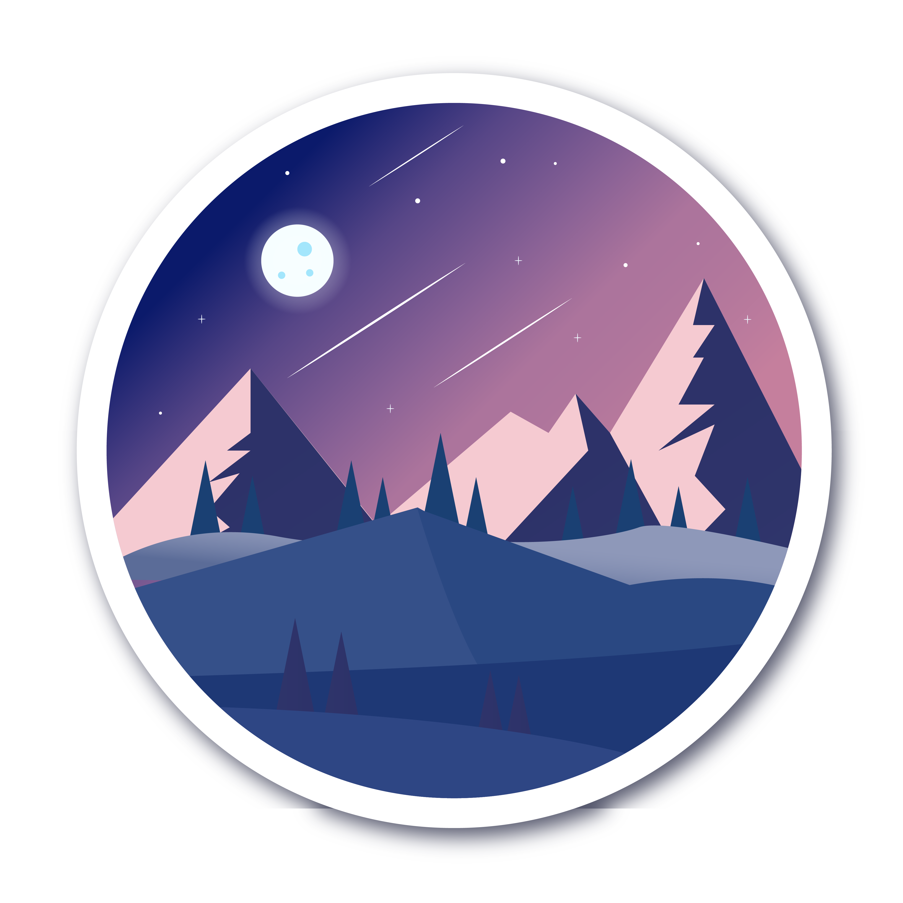
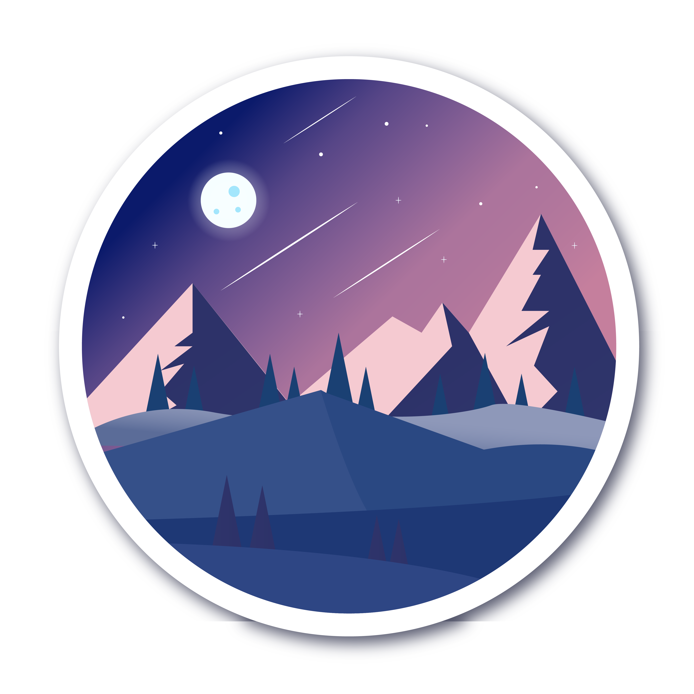

Interactive Map
"
- The boundary and routes layers can be toggled by clicking on the buttons in the top left portion of the map.
- The map can be moved top to bottom and left to right by holding the left mouse button while moving the mouse.
- In 3d mode, the map bearing and view angle can be manipulated by moving the mouse while holding down the right mouse button.
- Zoom, north bearing, and location controls are located top-right. Clicking the north bearing control upon map loading will put map in 2d view.
- Informative pop-ups can be viewed by clicking on summit markers, route lines, or boundary polygons.
"
Height vs Prominence
A Mountain State Comparison
Getting There
'Analysis by Joshua Serfass, 2022
National Park Boundaries: https://public-nps.opendata.arcgis.com/
US Forest Service Boundaries: https://data-usfs.hub.arcgis.com/
Route Data: https://www.peakbagger.com/, https://www.strava.com/athletes/18627052
Beckey, F. W. (2008). Cascade Alpine Guide: Climbing & High Routes. Mountaineers Books.
Climbing rating systems. Mountain Madness. (n.d.). Retrieved December 12, 2022,from https://mountainmadness.com/
EarthWord – prominence. EarthWord – Prominence | U.S. Geological Survey. (n.d.). Retrieved December 12, 2022, from https://usgs.gov/

Portfolio Home
Data Utilized in These Maps
National Park Boundaries: https://public-nps.opendata.arcgis.com/
US Forest Service Boundaries: https://data-usfs.hub.arcgis.com/
Route Data: https://www.peakbagger.com/, https://www.strava.com/athletes/18627052
Works Cited
